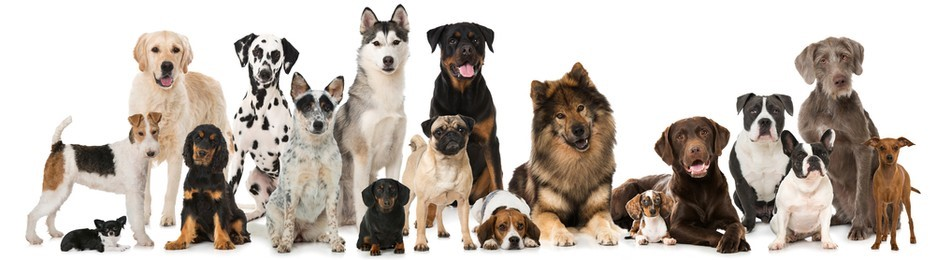
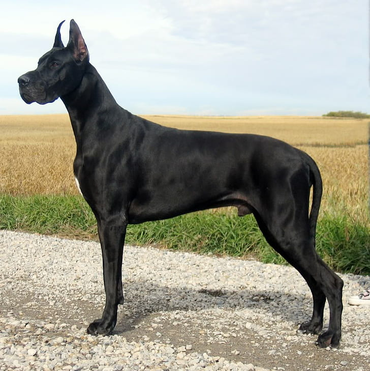
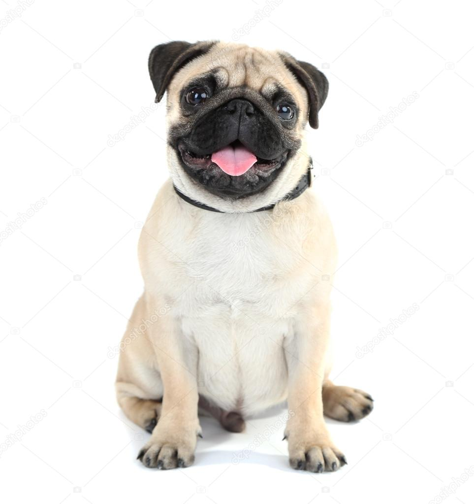
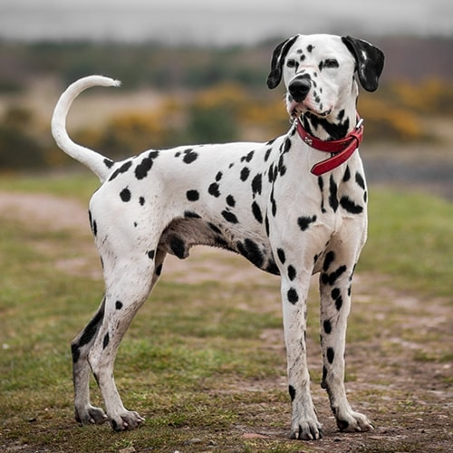

DOG
Dogs have a greater variance in behavioral and physical variation than any other land mammal, including wolves. Dogs have starch gel electrophoresis of red blood cell acid phosphatase. They also have smaller, compressed and crumpled tymphanic bullae. Physically, they have a more domed forehead and “stop” between the nose and forehead. Wolves have a more prominent temporalis muscle (the muscle that closes the jaws) and do not have dew claws on their back legs. Dogs lack a pre-caudal gland and go into estrus twice instead of once a year. Whereas dogs usually have brown eyes, wolves have amber or pale-colored eyes. Their skin is thicker and their paws are half the size of those of a wolf.
Click on the image below to change the Background Color and the Text Color
Types Of Dogs
There are several types of dog groups that are classified based on what they were bred to do:
Sporting dogsSporting dogs were bred to help their hunters capture and retrieve game birds. Retrievers swim and focus on waterfowl, while setters, spaniels and pointers hunt game birds. Their coats are often thick and water-repellant to protect against the elements. Some examples of sporting dog breeds are Golden Retriever, Labrador Retriever, the Nova Scotia Dock Tolling Retriever, Cocker Spaniel and German Shorthaired Pointer. |
|
Golden RetrieverClick the image!! 
|
Origin:Scotland, United Kingdom Height:22–24 in (56–61 cm) Bitches:20–22 in (51–56 cm) Weight:65–75 lb (29–34 kg) Bitches:55–65 lb (25–29 kg) Colour:Any shades of gold or cream Life span:Average 10–12 years Know about this dog>>>>>> |
Working dogsWorking dogs were bred to perform tasks such as guarding families or pulling sleds and carts. The Boxer, Great Dane and Rottweiler and a few examples of working dog breeds. |
|
Great DaneClick the image!!  |
Other names
Bitches: 71–84 cm (28–33 in) Weight 50–82 kg (110–180 lb) Life span: average 8–10 years Know about this dog>>>>>> |
Herding dogsHerding dogs are a type of working dog along with service dogs. While herding dogs help herd livestock, service dogs help people with disabilities. However, they differ in that they were bred specifically to herd livestock, such as sheep, cattle and reindeer. Some are excellent for police and military work. A few examples of herding dog breeds are Border Collie, German Shepherd and Icelandic Sheepdog. |
|
German ShepherdClick the image!! 
|
Other names
Height:60–65 cm (24–26 in) Bitches:55–60 cm (22–24 in) Weight:30–40 kg (66–88 lb) Bitches:22–32 kg (49–71 lb) Coat:Double coat Color:Tan with black saddle, sable, solid black or bi-color Life span:9–13 Know about this dog>>>>>> |
Toy dogsToy dogs were bred for their small size to be companion dogs. They are perfect for city dwellers or anyone living in a small house. A few examples of toy dog breeds are Chihuahua, Pug and Shih Tzu.. |
|
PugClick the image!!  |
Other names:Dutch bulldog Origin:China (Ming dynasty) Know about this dog>>>>>> |
Non-sporting dogsNon-sporting dogs do not fit into any of the other group types and were bred to be companionship animals. The Bulldog, Dalmatian and Poodle are a few examples of non-sporting dogs. |
DalmatianClick the image!!  |
Other names:
Height:58–61 cm (23–24 in) Color:White background with black or brown spots. Black-spotted dogs will always have black noses, and brown will always have brown.Lemon, blue, brindle, or tricolor spots do appear on occasion but they are not accepted colors. Life span:10–18 years (avg.: 12–14) Know about this dog>>>>>> |